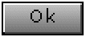

A lot of GUI controls like menus and lists use items for specifying their content. Before describing the GUI controls in chapter 5: Controls at first it is necessary to explain the concept behind items.
An Item is at least represented by a text and/or an icon...
... and can be disabled (usually shown as greyed text):
The drawing of the item properties (like the text or icon) is not done by the item itself but usually by a GUI-control (e. g. ItemMenu or ItemGrid) as this control knows best how to display the item properties inside the control-boundaries. When creating an item it will be assigned to this control and the item informs the control when an item property like the text has been changed, so that the control can redraw itself to show the changed item properties. The benefit for the application developer is that it is possible to modify the item without the need of taking care which GUI-components must be updated, as this is done automatically.
The following example shows a window which contains an ItemGrid with 3 embedded items:
The class AbstractItemContainer is derived from Item and extends the item by an interface for embedding a variable number of items as part of the item-container. The class ItemContainer offers a default implementation and might be used for building a menu-hierarchy which might be displayed by the controls ItemMenu or ItemTree. Examples for using an item-container are shown in chapter 5: Controls; the following picture shows an ItemTree which opened item 1 represented by an item-container having 5 items:

The class Action is derived from Item and extends the item with the ability to be executable. In GUI applications many commands can be invoked by e. g. menus, softkeys or push-buttons. Since the same action can be invoked by different GUI-components it is useful to represent a command as an Action to ensure a consistent state of the command and its representation. As an action is derived from the class Item every action has a text, may contain an icon and may be enabled/disabled. The dispatcher provided on initialization will be informed by messages when a property has been changed or the action has been executed.
| Example: an action can be assigned to a PushButton and is executed, after the push button has been pressed. The same action also can be assigned to other controls like an ItemMenu or to the softkeys of a Window. |  |
The following example shows the recommended usage of actions. Note that in this example no GUI controls are added, which contain and trigger the action. Examples for GUI controls which use actions are given in chapter 5: Controls.
MyWindow.hpp
#include <Gui/Window.hpp>
#include <Gui/Action.hpp>
class MyWindow : public Window {
public:
void Init();
private:
Action m_add_action;
Action m_delete_action;
Action m_rename_action;
Action m_close_action;
void Add();
void Delete();
void Rename();
void Close();
}
MyWindow.cpp
#include "MyWindow.hpp"
...
void MyWindow::Init()
{
Base::Init()
m_add_action.Init(this, Tr(L"Add"), (Action::ExecFn)&MyWindow::Add);
m_add_action.SetIcon(&confirm_bitmap);
m_delete_action.Init(this, Tr(L"Delete"), (Action::ExecFn)&MyWindow::Delete);
m_delete_action.SetIcon(&delete_bitmap);
m_delete_action.SetEnabled(FALSE);
m_rename_action.Init(this, Tr(L"Rename"), (Action::ExecFn)&MyWindow::Rename);
m_close_action.Init(this, Tr(L"Close"), (Action::ExecFn)&MyWindow::Close);
}
void MyWindow::Add()
{
// add code for adding here
}
void MyWindow::Delete()
{
// add code for deleting here
}
void MyWindow::Rename()
{
// add code for renaming here
}
void MyWindow::Close()
{
// add code for closing here
}
In the implementation of MyWindow::Init() every action gets a pointer to a dispatcher, by providing the method Action::Init() with the this-pointer as first argument (each window is a dispatcher). The second argument specifies the name of the action. The third parameter specifies the member function which should be invoked when the action has been executed.
Alternatively instead of providing a member function it is possible to overwrite the virtual method Action::Execute and implement the behavior there.
The default implementation of Action::Execute informs the dispatcher that the action has been executed by sending the message ActionExecutedMsg. The class Window, which is also a dispatcher, automatically listens to this message and invokes Window::OnActionExecuted(Action* action) which provides a hook to know which action has been executed.
It is not necessary for chapter 5: Controls to understand how to specify the rendering of the items, but it may be of interest later when customizing the look of the used menus and lists.
The GUI-controls which have embedded the items are responsible for drawing them. To allow a customizable look, the look is described in an abstract way by so called item renderer properties. Item renderer properties are given by an instance of the class ItemRendererProperties and can be assigned to each AbstractItemContainer and most GUI-controls using items.
Example: the default item renderer properties defined by the class GuiEngineConfig should be used by an ItemGrid:
const ItemRendererProperties* prop = GuiEngineConfig::GetDefaultItemRendererProperties(); m_item_grid.SetRenderer(prop);
The item renderer properties define the used item renderer. The item renderer is an instance of the class AbstractItemRenderer and is used by the item grid (and other controls) to render its items. It is possible to implement customized item renderer properties and customized item renderers, but the DefaultItemRenderer provided by APOXI should be sufficient for most use cases:
The item renderer properties are defined by:
|
|
|
|
|
|
|

The DefaultItemRenderer respects all renderer properties defined by ItemRendererProperties. But there is enough room for interpretation of those properties, so that it might be necessary to customize the rendering for extended properties or a different interpretation of existing properties.
As a first step a custom item renderer should be implemented, which draws a gradiented selection. The default item renderer draws a selected item with the color Color::SelectionBackground which is defined by the current APOXI Theme:
The outcome of the new class CustomItemRenderer, which will get derived from the class DefaultItemRenderer, should look like this:
CustomItemRenderer.hpp
#include <Gui/DefaultItemRenderer.hpp>
class CustomItemRenderer : public DefaultItemRenderer {
typedef DefaultItemRenderer Base;
public:
CustomItemRenderer(const ItemRendererProperties* properties = 0);
virtual ~CustomItemRenderer();
virtual void DrawBackground(DeviceContext* dc,
const Item& item,
const Rect& bounds,
INT item_style) const;
};
CustomItemRenderer.cpp
#include <Gui/PaintDc.hpp>
CustomItemRenderer::CustomItemRenderer(const ItemRendererProperties* properties) :
Base(properties)
{
}
CustomItemRenderer::~CustomItemRenderer()
{
}
void CustomItemRenderer::DrawBackground(DeviceContext* dc,
const Item& item,
const Rect& bounds,
INT item_style) const
{
if (item_style == AbstractItemRenderer::SelectedStyle) {
PaintDc pdc(dc);
// Use grey as starting color for the top...
Color color(200, 200, 200);
for (XYDIM y = bounds.GetTop(); y <= bounds.GetBottom(); ++y) {
pdc.SetPenColor(color);
pdc.DrawLine(bounds.GetLeft(), y, bounds.GetRight(), y);
// ... and do a gradient to red
color.SetRed(color.GetRed() - 2);
color.SetGreen(color.GetGreen() - 5);
color.SetBlue(color.GetBlue() - 5);
}
}
else {
Base::DrawBackground(dc, item, bounds, item_style);
}
}
The custom item renderer is derived from the DefaultItemRenderer and overwrites the method AbstractItemRenderer::DrawBackground. Only if the item style is marked as 'selected', the custom implementation drawing a gradient is used, otherwise the base implementation of the default item renderer is invoked.
The question remains how the used ItemGrid of the screenshots knows whether it should use the default item renderer or the custom item renderer: the item grid has a method SetRenderer() with the following signature:
void AbstractItemGrid::SetRenderer(const ItemRendererProperties* properties = 0);This means that the properties define the used item renderer. For this the following customizable factory method is offered in the class GuiEngineConfig (the class GuiEngineConfig is located in the config directory of the project):
static AbstractItemRenderer* GuiEngineConfig::ObtainItemRenderer(const ItemRendererProperties* properties = 0);The default implementation of ObtainItemRenderer looks like this:
AbstractItemRenderer* GuiEngineConfig::ObtainItemRenderer(const ItemRendererProperties* properties)
{
return new DefaultItemRenderer(properties);
}
This means that the default item renderer is used for any kind of item renderer properties. When changing the implementation the following way, the custom item renderer is used instead:
AbstractItemRenderer* GuiEngineConfig::ObtainItemRenderer(const ItemRendererProperties* properties)
{
return new CustomItemRenderer(properties);
}
It the custom item renderer should only be used if the item renderer properties have a height smaller than 20 pixels, the following implementation would be suitable:
AbstractItemRenderer* GuiEngineConfig::ObtainItemRenderer(const ItemRendererProperties* properties)
{
if ((properties != 0) && (properties->GetHeight() < 20) {
return new CustomItemRenderer(properties);
}
return new DefaultItemRenderer(properties);
}
In the MMI often more complex items are used, which contain more properties than the APOXI class Item offers. The following example shows how an item renderer can be customized to display those additional properties.
In the example is assumed that the MMI implements a custom item which extends the class Item by the properties 'optional icon' and 'time' (a use case might be items showing the current time zone, where the 'optional icon' might indicate day/night phases). A possible implementation of such a custom item might look like this:
CustomItem.hpp
#include <Gui/Item.hpp>
#include <Gui/ImageObtainer.hpp>
#include <Auxiliary/Time.hpp>
class CustomItem : public Item {
typedef Item Base;
public:
enum {
ID = 1000
};
CustomItem(Dispatcher* dispatcher,
const WString& text,
const ImageObtainer& default_icon,
const ImageObtainer& optional_icon,
const Time& time);
virtual ~CustomItem();
void SetOptionalIcon(const ImageObtainer& optional_icon);
const ImageObtainer& GetOptionalIcon() const { return m_optional_icon; }
void SetTime(const Time& time);
const Time& GetTime() const { return m_time; }
virtual BOOLEAN IsInstanceOf(INT id) const;
private:
ImageObtainer m_optional_icon;
Time m_time;
};
CustomItem.cpp
CustomItem::CustomItem(Dispatcher* dispatcher,
const WString& text,
const ImageObtainer& default_icon,
const ImageObtainer& optional_icon,
const Time& time) :
Base(dispatcher, text, default_icon),
m_optional_icon(optional_icon),
m_time(time)
{
}
CustomItem::~CustomItem()
{
}
void CustomItem::SetOptionalIcon(const ImageObtainer& optional_icon)
{
m_optional_icon = optional_icon;
NotifyPropertyChange(UnspecifiedPropertyId);
}
void CustomItem::SetTime(const Time& time)
{
if (m_time != time) {
m_time = time;
NotifyPropertyChange(UnspecifiedPropertyId);
}
}
BOOLEAN CustomItem::IsInstanceOf(INT id) const
{
if (ID != id) {
return Base::IsInstanceOf(id);
}
return TRUE;
}
The implementation is straight forward, but a note to the methods SetTime and SetOptionalIcon might be useful: invoking the method Item::NotifiyPropertyChange informs the dispatcher that a property has been changed and results in a redrawing of the item. This is very important as the application developer only needs to take care to change the properties of the item itself, he does not need to trigger a redraw of any GUI component itself.
If this custom item is added to an item grid, the item renderer does not draw the additional properties 'optional icon' and 'time'. For this the custom item renderer is extended by the implementation of the method DrawItem (new code is marked in bold):
CustomItemRenderer.hpp
#include <Gui/DefaultItemRenderer.hpp>
class CustomItemRenderer : public DefaultItemRenderer {
typedef DefaultItemRenderer Base;
public:
CustomItemRenderer(const ItemRendererProperties* properties = 0);
virtual ~CustomItemRenderer();
virtual void DrawBackground(DeviceContext* dc,
const Item& item,
const Rect& bounds,
INT item_style) const;
virtual void DrawItem(DeviceContext* dc,
const Item& item,
const Rect& bounds,
INT item_style) const;
};
CustomItemRenderer.cpp
#include <Gui/PaintDc.hpp>
CustomItemRenderer::CustomItemRenderer(const ItemRendererProperties* properties) :
Base(properties)
{
}
CustomItemRenderer::~CustomItemRenderer()
{
}
void CustomItemRenderer::DrawBackground(DeviceContext* dc,
const Item& item,
const Rect& bounds,
INT item_style) const
{
if (item_style == AbstractItemRenderer::SelectedStyle) {
PaintDc pdc(dc);
// Use grey as starting color for the top...
Color color(200, 200, 200);
for (XYDIM y = bounds.GetTop(); y <= bounds.GetBottom(); ++y) {
pdc.SetPenColor(color);
pdc.DrawLine(bounds.GetLeft(), y, bounds.GetRight(), y);
// ... and do a gradient to red
color.SetRed(color.GetRed() - 2);
color.SetGreen(color.GetGreen() - 5);
color.SetBlue(color.GetBlue() - 5);
}
}
else {
Base::DrawBackground(dc, item, bounds, item_style);
}
}
void CustomItemRenderer::DrawItem(DeviceContext* dc,
const Item& item,
const Rect& bounds,
INT item_style) const
{
if (item.IsInstanceOf(CustomItem::ID)) {
const CustomItem& custom_item = static_cast<const CustomItem&>(item);
XYDIM x_start = bounds.GetLeft();
XYDIM x_end = bounds.GetRight();
PaintDc pdc(dc);
// draw time property on the right border
const WString time_text(custom_item.GetTime().GetWString(Time::TimeHM));
const Font& font = pdc.GetFont();
x_end -= font.GetTextWidth(time_text, pdc.GetTextAttr());
pdc.DrawTextBox(Rect(x_end, bounds.GetTop(), bounds.GetRight(),bounds.GetBottom()), time_text);
// draw optional icon left from the time property
const ImageObtainer& optional_icon = custom_item.GetOptionalIcon();
if (optional_icon.GetBitmap() != 0) {
x_end -= optional_icon.GetWidth();
pdc.DrawBitmap(x_end,
bounds.GetTop() + (bounds.GetHeight() - optional_icon.GetHeight()) / 2,
*optional_icon.GetBitmap());
}
// draw default icon on the left border
const ImageObtainer& default_icon = custom_item.GetIcon();
if (default_icon.GetBitmap() != 0) {
pdc.DrawBitmap(x_start,
bounds.GetTop() + (bounds.GetHeight() - default_icon.GetHeight()) / 2,
*default_icon.GetBitmap());
x_start += default_icon.GetWidth() + 2;
}
// draw text in the remaining space
pdc.DrawTextBox(Rect(x_start, bounds.GetTop(), x_end, bounds.GetBottom()), custom_item.GetText());
}
else {
Base::DrawItem(dc, item, bounds, item_style);
}
}
The outcome of this implementation will look like this:
The method AbstractItemGrid::DrawItem is responsible for drawing all item properties. By checking whether the item represents a specific instance, it is possible to access the additional interfaces by the following code:
if (item.IsInstanceOf(CustomItem::ID)) {
const CustomItem& custom_item = static_cast<const CustomItem&>(item);
...
}
This approach is useful when having a limited set of extended items or when having very
generic items like the PropertyItems provided by ATL. It is
in the hand of the customer to decide whether there should be one class of a custom item renderer which
is capable of rendering all kind of items or whether there should be separate item renderer classes
for each kind of item. A thumb of rule: if inside the drawing methods very much code using
the runtime type information by Item::IsInstanceOf is used, it might be better to split up the code
into several custom item renderer classes. Chosing the preferred item renderer can
be done inside the method GuiEngineConfig::ObtainItemRenderer (some hints: the item renderer property
'renderer hint' is very useful, the item renderer also offers runtime
type information by ItemRendererProperties::IsInstanceOf).
Each item can act as separator by setting the corresponding property with Item::SetSeparator(BOOLEAN flag). It is in the hand of the control which displays the item how to show this property. Most times items acting as separator are used in ItemGrids or ItemMenus. The DefaultItemRenderer, which is responsible for drawing items of menus, draws separators the following way:
Especially for menus it is useful that a variable number of items can get marked, so that an action can be applied to all those items. Items can easily marked by invoking Item::SetMarked(TRUE). In the following screenshot the items 1, 7 and 8 are marked, the item 4 is selected:
[ Previous: Sample Application ] [ Next: Controls ]